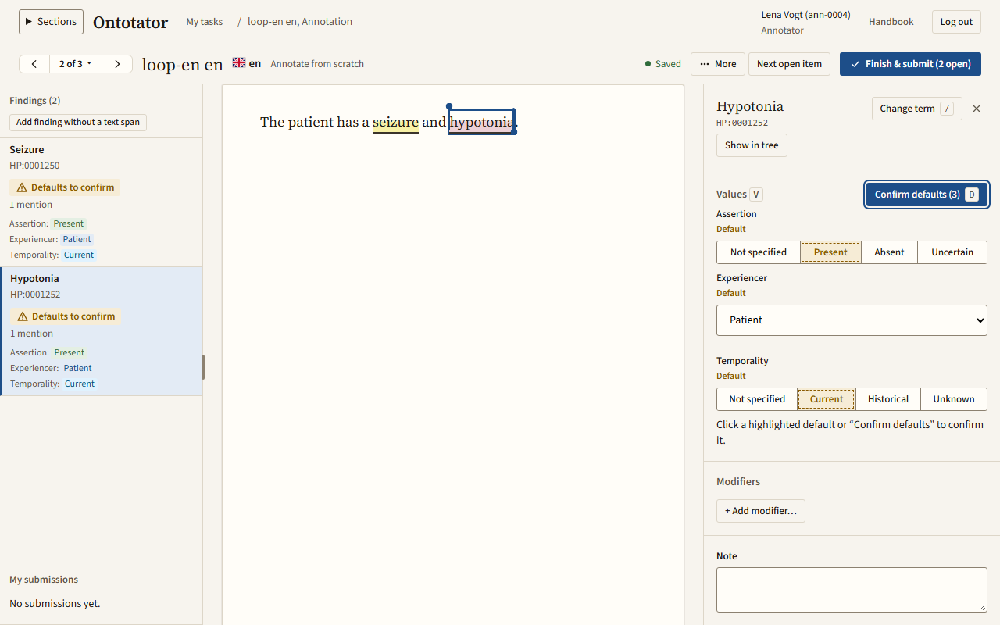
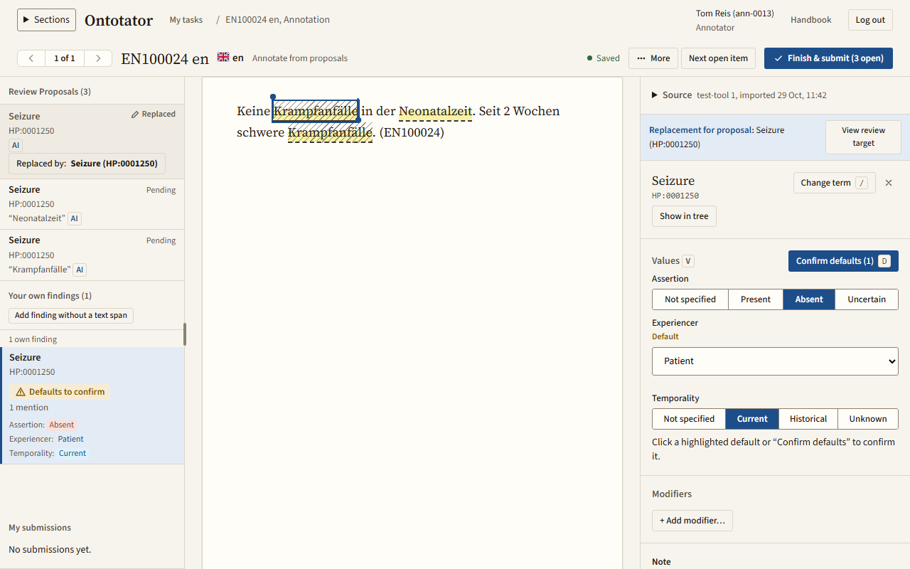
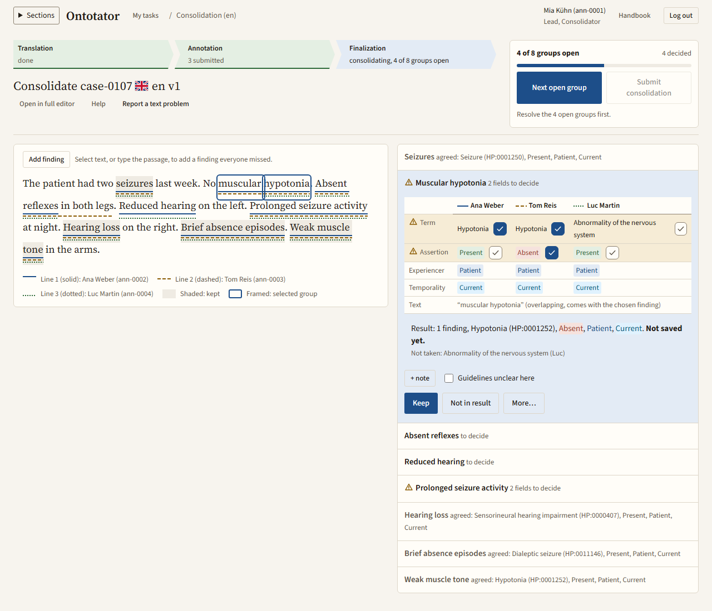

Since March, he has had focal-onset seizures and low muscle tone, but no fever.
Ontotator is a self-hosted web service for marking ontology terms such as HPO in clinical text, deciding them one by one, and exporting traceable results.
Watch one task, start to finish
Example: HPO span annotation guideline
From independent readings to one result
The clinical text stays the primary object. Review treats proposals from people and from tools the same way, keeps their origin visible, and nothing is decided silently.

Annotate independently
Select text, search the ontology, set assertion, experiencer and temporality. In independent annotation the browser receives no proposals and nothing derived from them.

Review proposals
Confirm, reject, edit or mark as uncertain. An edit creates a linked human counterpart; the original stays unchanged.

Consolidate
Where annotators agree, the result is ready. Where they differ, the consolidator decides field by field and the decision is recorded.
Run it on your own server
Ontotator runs with Docker Compose and PostgreSQL. Once the pinned ontology release is loaded, it needs no external services, cloud accounts or LLM calls, so it also fits closed networks.